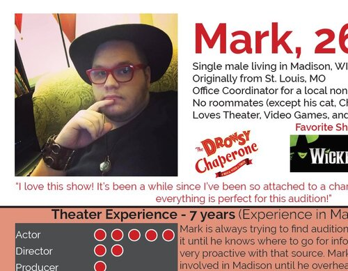
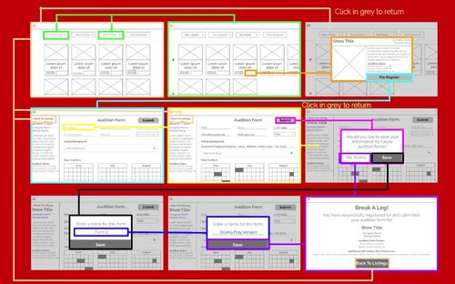

The Madison Audition Hub
Capstone Project - User Experience Design Graduate Certificate - University of Wisconsin - Madison - September 2019-August 2020
The Madison Audition Hub is a new digital portal for Madison and Madison-area community theater performers who can search and register for auditions in the area. The site gives a single, accessible place to find exactly the info they are looking for in an audition listing. It will allow performers to save their information, relieving the monotony of filling out the same information for each separate audition. Additionally, it gives production companies a digital place to promote auditions, collect audition forms, and see how many people have registered. In this way, it provides a more sustainable approach to run auditions, giving an accurate count of interest, reducing the need for paper, and reducing the human error caused by handwriting.
Design Brief
Design Brief Document | Includes:
- Competitive Analysis
- User Research Interviews and Surveys
- Personas
- User Journey Map
Ideation, Design, and Iteration
Files available to view: